Respuesta: biomasa seca a los 42 días (g). Unidad experimental: cada maceta con un plantín.
DBCA: diseño en bloques completos aleatorizados. 7 mesadas · una UE de cada sustrato por mesada · 21 UE. Asignación aleatoria de los tres niveles dentro de cada mesada.
Con estos datos obtuvimos este resultado
ANOVA del DBCA · resultado de la Clase 11
Fuente
gl
SC
CM
F
p
Sustrato
2
45,62
22,81
30,70
0,0000191
Mesada
6
44,98
7,50
10,09
0,0004
Error
12
8,92
0,74
—
—
Total
20
99,51
—
—
—
Con α = 0,05, existe evidencia de un efecto del tipo de sustrato sobre la biomasa seca media de los plantines de tomate, en las condiciones definidas por este experimento.
¿Es suficiente con obtener este resultado?
¿Alcanza con obtener un valor-p del ANOVA para confiar en la conclusión?
NO necesariamente. Debemos preguntarnos si el modelo representa razonablemente:
los datos;
el diseño;
el comportamiento de los errores.
Antes de confiar en la inferencia, revisemos los supuestos del modelo.
Antes de revisar los supuestos
MODELO ADECUADO
↓DATOS CORRECTOS
↓COMPORTAMIENTO DE LOS ERRORES
Un dato extraño merece una pregunta
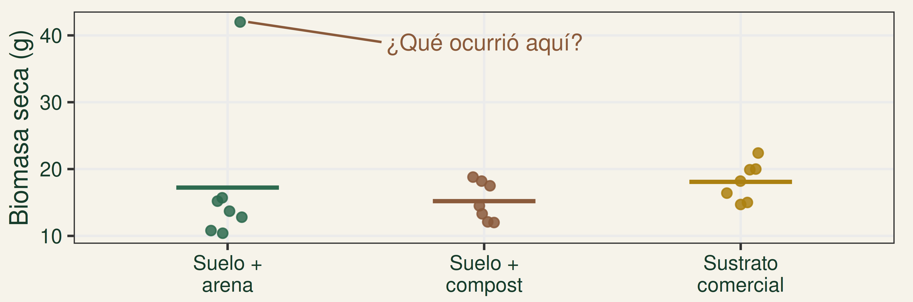
¿Error de registro o medición? ¿Es biológicamente plausible? ¿Revela algo relevante del proceso?
DESCRIBIR antes de INFERIR. No eliminar automáticamente.
¿Qué predice el modelo para una maceta?
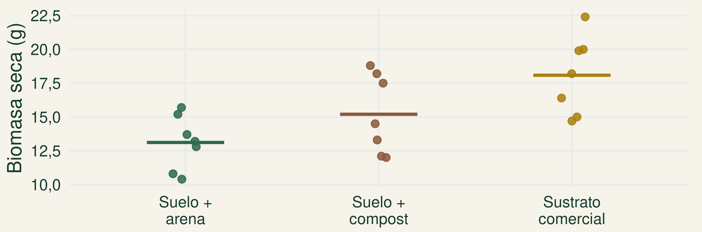
En este ANOVA de un factor, predice la media de su tratamiento.
¿Cuánto se aparta de lo predicho?
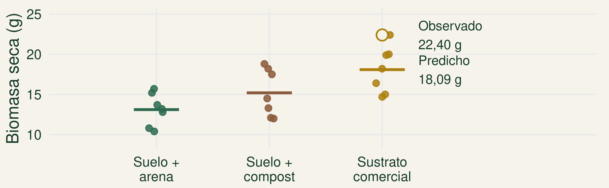
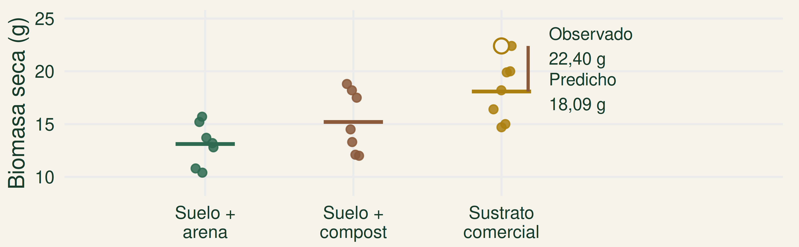
Observado − predicho = residuo
\[e_{ij}=y_{ij}-\hat y_i\]
22,40 − 18,09 = 4,31 g
Tres supuestos sobre los errores
INDEPENDENCIA
Los errores de distintas UE no dependen unos de otros.
NORMALIDAD
Distribución aproximadamente normal alrededor de cero.
HOMOGENEIDAD DE VARIANZAS
Variabilidad aproximadamente similar entre grupos.
¿12 plantas son 12 réplicas?
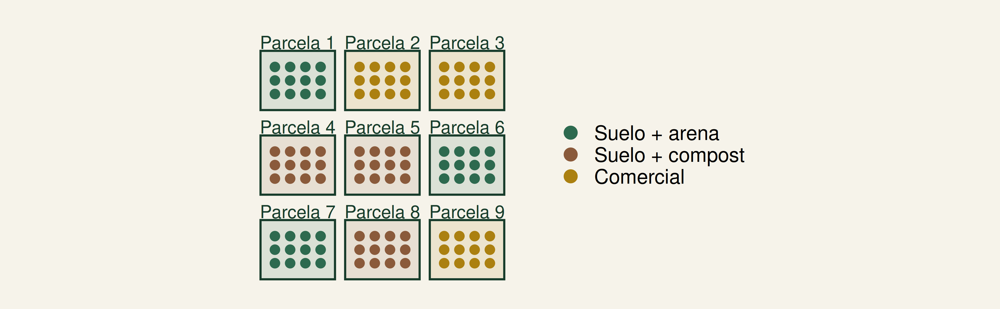
Parcela = UE / réplica independiente
Planta medida dentro de la parcela = submuestra.
9 UE independientes · 108 mediciones.
La independencia se construye con el diseño
Medir 12 plantas dentro de una parcela no convierte esa parcela en 12 réplicas independientes.
Definir la unidad experimental
Aleatorizar los tratamientos
Considerar espacio, tiempo e influencias entre UE
¿Los residuos siguen algún patrón?
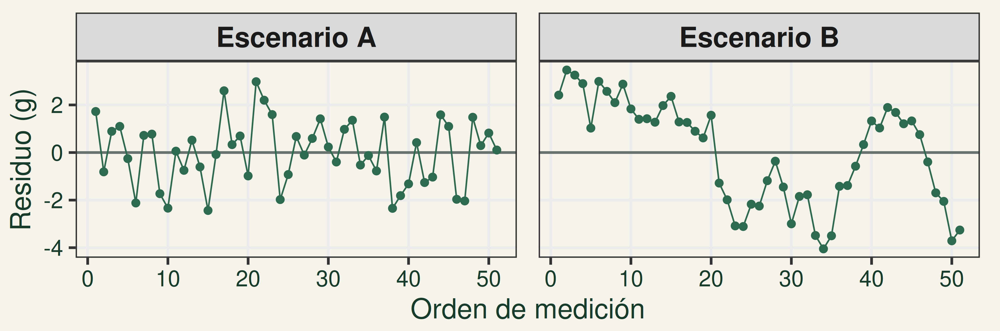
Las rachas pueden indicar dependencia.
No ver un patrón no demuestra independencia.
¿Los datos tienen que ser normales?
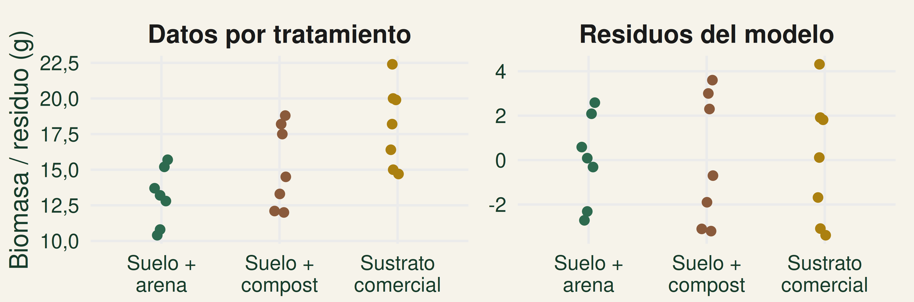
No necesariamente. Nos interesa la distribución de los errores del modelo.
¿Cómo leemos un Q-Q plot?
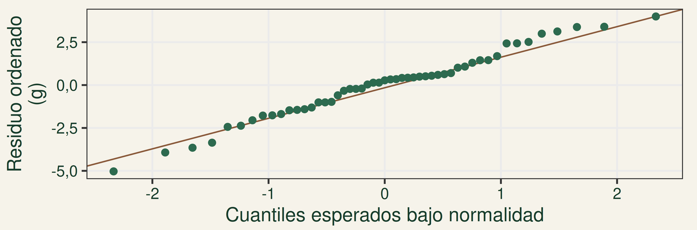
Si hay compatibilidad con normalidad, los puntos siguen razonablemente la recta.
¿Qué desviaciones llaman la atención?
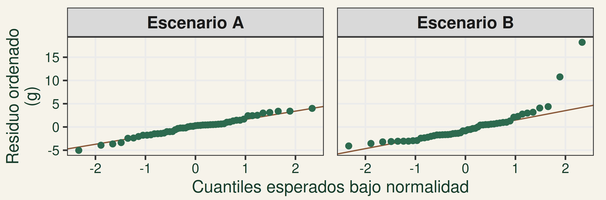
A: fluctuaciones alrededor de la recta.
B: curvatura marcada; conviene investigar.
Shapiro-Wilk: una evidencia complementaria
\(H_0\): los residuos son compatibles con una distribución normal.
Si p > 0,05, no encontramos evidencia suficiente para rechazar la normalidad.
No rechazar \(H_0\) no demuestra normalidad.
La sensibilidad depende del tamaño muestral.
¿Todos los tratamientos deben tener la misma variabilidad?
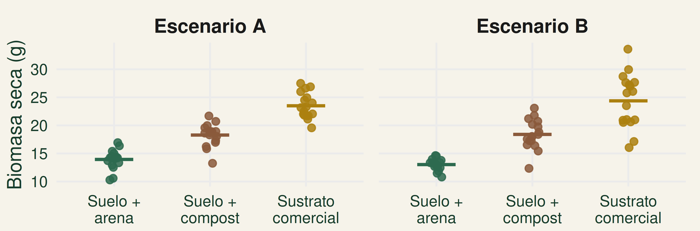
No exactamente. Buscamos dispersiones razonablemente comparables.
Residuos frente a valores predichos
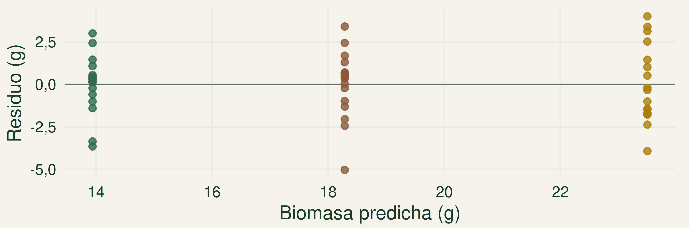
¿La amplitud vertical es parecida en los tres grupos?
¿Qué nos dice el embudo?
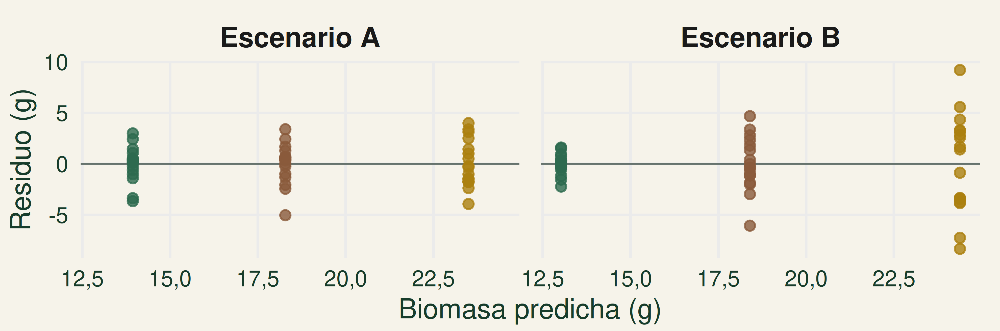
En B, la dispersión aumenta con el valor predicho.
Levene: complementar el gráfico
\(H_0\): las varianzas de los grupos son iguales.
Si p > 0,05, no detectamos evidencia suficiente de heterogeneidad.
No rechazar \(H_0\) no demuestra igualdad.
Importan la magnitud del problema y las características del diseño.
¿Es razonable una descripción aditiva?
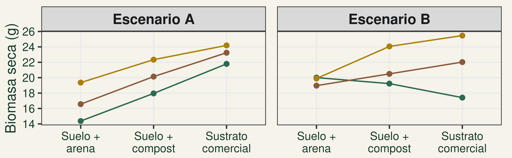
Cada línea representa una mesada.
En diseños con más de un factor, también debemos preguntarnos si una descripción aditiva resulta razonable.
¿Dónde buscamos evidencia?
Pregunta
Principal fuente de evidencia
¿Independencia razonable?
Diseño y estructura espacial/temporal
¿Normalidad aproximada?
Q-Q plot de residuos
¿Variabilidad comparable?
Residuos vs. predichos y grupos
¿Información adicional?
Shapiro-Wilk / Levene como complemento
El festejo anticipado
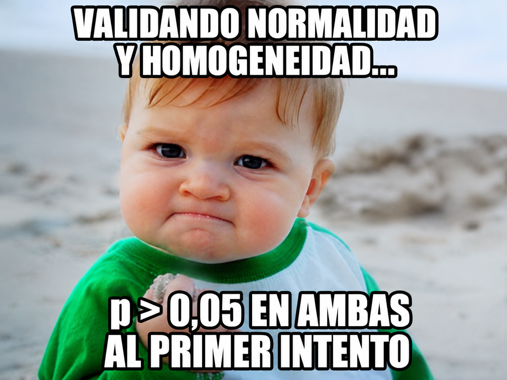
¿Entonces puedo hacer ANOVA?
¿Alcanza con esas dos pruebas?
NO ALCANZA CON ESO.
DISEÑO + DATOS + MODELO + RESIDUOS
No buscamos “aprobar” supuestos
Buscamos problemas que puedan comprometer nuestra inferencia.
Diseño + gráficos + contexto + interpretación
Dos valores-p favorables… ¿qué falta?
Shapiro-Wilk: p > 0,05 · Levene: p > 0,05
3 parcelas por tratamiento · 12 plantas por parcela Se analizaron las 108 plantas como réplicas independientes. ¿Es correcto?
Hay 9 réplicas independientes: 3 por tratamiento.
Las 108 plantas son mediciones agrupadas en parcelas.
Si aparece un problema, primero entenderlo
1. Revisar los datos y el diseño.
2. Identificar qué supuesto parece comprometido.
3. Evaluar la magnitud y la estructura del problema.
Revisar el modelo y volver a evaluar
4. ¿El modelo representa el problema?
5. Considerar una transformación, otro procedimiento u otro modelo.
6. Volver a evaluar el modelo.
La respuesta depende del problema detectado.
¿Y si los supuestos no se cumplen?
TRANSFORMAR LA RESPUESTA
\(\log(Y)\) o \(\sqrt{Y}\): opciones ante asimetría o heterogeneidad.
OTRO PROCEDIMIENTO
No paramétricos (p. ej., Kruskal–Wallis), según pregunta y diseño.
OTRO MODELO
Modelos lineales generalizados (GLM), por ejemplo: conteos → Poisson · binaria/proporciones de éxitos → binomial.
La alternativa depende del problema.
Transformar no soluciona la falta de independencia ni convierte submuestras en réplicas.
Los supuestos se evalúan; no se “aprueban”
DISEÑO + DATOS + MODELO + RESIDUOS
Un ANOVA no es confiable simplemente porque Shapiro-Wilk y Levene dieron p > 0,05.